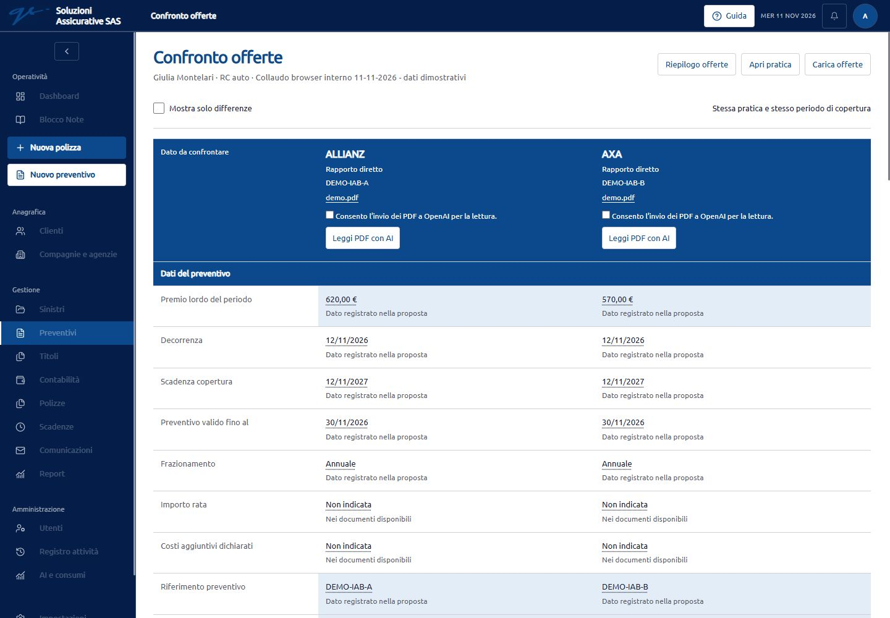
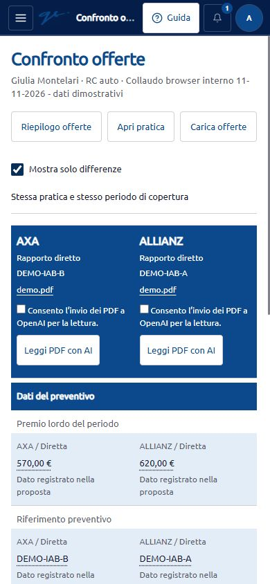
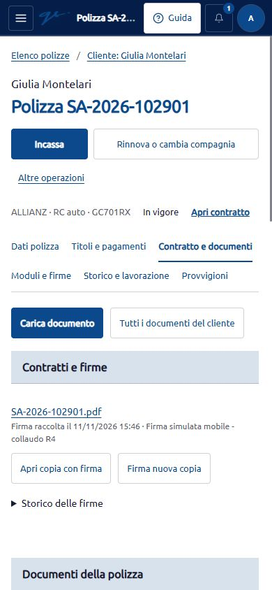

Collaudo R4 nel browser interno
11 novembre 2026 · Ambiente locale 127.0.0.1:8001 · Dati dimostrativi
Completata la verifica dei flussi principali su desktop e su viewport mobile. Corrette la perdita dei destinatari alla prima scelta del cliente, la leggibilità dell’intestazione del confronto, una descrizione inesatta della firma e l’incompatibilità del reset dimostrativo con le nuove tabelle AI vuote. La versione compilata è attiva con autorizzazione dell’utente.
Le verifiche comprendono 60 aperture misurate, 79 test applicativi con 857 asserzioni, 81 test dell’interfaccia, compilazione e controllo del diff riusciti. Questo esito riguarda il perimetro sotto descritto e non equivale a una certificazione completa del progetto.
Correzioni e verifica
| Problema riscontrato | Comportamento corretto | Evidenza |
|---|---|---|
| Selezionando le compagnie prima del cliente, la prima scelta del cliente cancellava le spunte. | La prima scelta conserva i destinatari. Un successivo cambio cliente azzera i collegamenti e le selezioni del precedente. | ALLIANZ e AXA restano selezionate dopo il caricamento completo di Giulia Montelari, su desktop e mobile. Il cambio a Lorenzo Bellandi su mobile azzera le scelte. Verificato anche “Solo selezionati”. |
| Testi secondari e collegamenti nell’intestazione blu del confronto erano poco leggibili. | Colore bianco coerente con l’intestazione. | Stili effettivi: testo RGB 255,255,255 su sfondo RGB 11,73,140. Screenshot desktop e mobile; nessun debordamento della pagina. |
| Una copia firmata dal computer veniva descritta come raccolta sul tablet. | Le nuove copie riportano “Copia con firma raccolta nel gestionale”. | Nuova copia dimostrativa n. 19 salvata e presente nello storico. Originale n. 10 e precedente copia n. 18 conservati. |
Il reset dei soli dati dimostrativi rifiutava lo schema con ai_usages anche quando vuoto; due test non passavano. | Le tre tabelle AI sono riconosciute e incluse nel backup. Se contengono consumi, letture o revisioni il reset è bloccato. Le dipendenze sconosciute continuano a bloccarlo. | Regressioni su registro AI, documento sorgente e dipendenza non prevista; test passati su database SQLite isolato in memoria. Nessun reset eseguito sull’archivio R4. |
| Il riferimento al servizio di sviluppo sulla porta 5173 rimaneva attivo mentre la connessione veniva rifiutata. | R4 usa gli asset già compilati. | Solo public/hot spostato nel file public-hot.backup di questa cartella. Browser verificato con CSS e JavaScript sotto /build/assets/. Nessun servizio riavviato. |

Flussi provati
| Area | Verifica effettuata | Risultato e limiti |
|---|---|---|
| Dashboard | Apertura, collegamento ai titoli, filtro del periodo. | Contenuti e collegamenti utilizzabili. Il periodo 1–30 novembre mostra correttamente l’assenza di titoli da incassare nel filtro scelto. |
| Clienti | Ricerca di Giulia Montelari e apertura scheda. | Risultato univoco, scheda con polizze e accessi alle sezioni. Ricerca e scheda provate alle due larghezze. |
| Preventivi | Nuova pratica dimostrativa, due contatti simulati, caricamento di due PDF di prova, riepilogo. | Pratica n. 6 con due offerte ricevute: ALLIANZ 620 € e AXA 570 €. Importi e prodotti sono esclusivamente dati di collaudo, non prezzi commerciali. |
| Confronto | Selezione singola, selezione incompatibile fra pratiche, due offerte della stessa pratica, filtro differenze. | Conteggi coerenti; confronto incompatibile bloccato. Le differenze della coppia dimostrativa sono premio, riferimento e prodotto. Letture AI e collegamenti alle singole fonti estratte non provati dal vivo: nessuna lettura a pagamento avviata. |
| Polizze e incasso | Ricerca SA-2026-102901, apertura modulo, scelta titolo e metodo, conferma di un incasso dimostrativo. | Registrati 360 € sul titolo n. 1, ora saldato. Resta la quietanza futura da 360 €. Su mobile verificati anche compilazione automatica dell’importo e abilitazione della conferma, senza registrare un secondo incasso. |
| Titoli | Elenco, dettaglio e vista “In giacenza entro 15 giorni”. | Stati e residui coerenti con l’incasso; la vista in giacenza mostra zero risultati nell’archivio attuale. |
| Scadenze | Vista a 15 giorni e apertura degli altri dati di una riga. | Cinque scadenze contrattuali visibili; dettagli accessibili anche su mobile. |
| Contabilità | Vista “Oggi”, dettaglio del movimento e riscontro con la polizza. | Un incasso da 360 €, rimborsi 0 €, saldo 360 €. Movimento n. 2 collegato al titolo n. 1 e alla polizza corretti. |
| Comunicazioni | Preparazione email per LEONE ASSICURAZIONI e verifica dello storico. | Bozza “Da confermare” con un incasso. Casella e indirizzo dell’agenzia da completare. Nessun messaggio inviato all’esterno. |
| Firma | Lettura PDF, punto firma, tratto da tastiera e salvataggio di due copie simulate. | Originale e storico conservati. Seconda copia visibile dopo 2,88 s dal salvataggio. Documenti dichiarati di prova e non validi; non sono firme contrattuali reali. Tablet fisico e input con dito o pennino non provati. |




Tempi di apertura
Tre campioni per schermata e per larghezza: desktop 1440 × 1000, mobile 390 × 844. Cache normale, file compilati, nessuna limitazione simulata di rete o CPU. Il tempo comprende il comando del browser, l’evento di caricamento, il titolo e il comando principale visibili. Per la firma comprende anche la prima pagina PDF renderizzata e leggibile. Screenshot esclusi dal tempo.
| Schermata | Desktop | Intervallo desktop | Mobile | Intervallo mobile |
|---|---|---|---|---|
| Dashboard | 1,65 s | 1,51–1,65 s | 1,79 s | 1,74–1,86 s |
| Clienti | 1,55 s | 1,44–1,56 s | 1,58 s | 1,44–2,08 s |
| Preventivi | 1,42 s | 1,41–1,57 s | 1,54 s | 1,48–2,62 s |
| Confronto | 1,85 s | 1,58–1,93 s | 1,77 s | 1,61–2,85 s |
| Polizze | 1,81 s | 1,57–1,91 s | 1,89 s | 1,53–2,41 s |
| Titoli | 1,70 s | 1,59–1,94 s | 1,69 s | 1,57–2,92 s |
| Scadenze | 1,60 s | 1,56–1,65 s | 1,62 s | 1,59–2,37 s |
| Contabilità | 1,79 s | 1,70–1,89 s | 1,69 s | 1,67–1,77 s |
| Comunicazioni | 1,62 s | 1,58–1,67 s | 1,63 s | 1,57–2,04 s |
| Firma | 1,96 s | 1,69–2,00 s | 1,85 s | 1,71–2,20 s |
Mediane da 1,42 a 1,96 secondi; singoli campioni da 1,41 a 2,92 secondi. Nessun debordamento orizzontale del documento nelle 60 misure. Sono tempi osservati nell’automazione locale, non una misura del solo server o una garanzia su dispositivi reali.
L’archivio di questo giro contiene 50 clienti, 60 polizze, 10 titoli e 5 offerte. Il precedente collaudo isolato utilizzava circa 4.900 clienti, 8.000 polizze e 12.000 titoli: i tempi dei due ambienti non permettono di attribuire un miglioramento prestazionale al codice.
Dati grezzi, campioni, metodo e misure esplorative dei passaggi operativi.
Passaggi dell’operatore
Conteggio dal punto di partenza indicato; digitazione o selezione di un campo conta come un’azione, senza contare i singoli tasti. Le misure dei comandi esplorativi sono nel JSON e non vanno confrontate direttamente con le mediane di apertura.
| Obiettivo | Partenza | Azioni osservate |
|---|---|---|
| Aprire un cliente tramite ricerca | Elenco clienti | 3: compilare ricerca, cercare, aprire risultato. |
| Confrontare due offerte | Riepilogo offerte | 3: due spunte e “Confronta offerte”. |
| Registrare un incasso | Riga della polizza | 4: “Incassa”, scegliere titolo, scegliere modalità, confermare. La data odierna e il soggetto ricevente erano già proposti; modifiche aggiuntive aumentano il conteggio. |
| Preparare la bozza degli incassi | Pagina Incassi delle comunicazioni | 1 comando “Prepara email” per l’agenzia. Revisione e invio non inclusi. |
| Aprire una sezione dal menu mobile | Menu chiuso | 2: aprire il menu e scegliere la sezione. |
Verifiche automatiche
- 79 test applicativi, 857 asserzioni: tutti passati. Perimetro: dati dimostrativi e upload, scelta destinatari, confronto, firma, postazioni di firma, riepiloghi dei pagamenti e flusso email.
- 81 test dell’interfaccia: tutti passati.
- Compilazione riuscita; controllo del diff senza errori. Restano gli avvisi di compilazione su un’importazione sia statica sia dinamica e sulla dimensione del modulo Excel, senza bloccare la build.
- Test applicativi eseguiti con SQLite in memoria e trasporto email simulato. Nessun reset o invio reale usato per i test.
Le modifiche locali già presenti sono state conservate. I file interessati da questo intervento sono i selettori cliente/destinatari, lo stile del confronto, i servizi di firma e reset dimostrativo e le regressioni sul reset.
Questioni ancora aperte
- Email in ingresso, collegamento delle risposte e assistenza AI nel relativo flusso restano da completare o collaudare end-to-end. La sola bozza in uscita non prova queste funzioni.
- La riconciliazione definitiva richiede l’Excel operativo e i movimenti corrispondenti. La prova dimostrativa del precedente collaudo non sostituisce questo riscontro.
- La firma è stata provata nel browser con viewport desktop/mobile e input da tastiera. Restano prova su tablet fisico, pennino/dito e acquisizione da scanner o fotocamera.
- Non sono stati inviati messaggi esterni né avviate letture AI a pagamento. Le offerte dimostrative non hanno quindi citazioni estratte con AI da verificare nel browser.
- Nel catalogo dei filtri compare la voce
INTEGRAZIONE MOBILITÃ, con possibile problema di codifica. Non è stata modificata: occorre confrontarla con la denominazione sorgente.
PHP e sicurezza
Stato della correzione del PHP effettivamente usato da R4: non verificato. L’utente ha rinviato la lettura del processo sulla porta 8001. È stata osservata soltanto la versione da riga di comando: PHP 8.3.1, build 20 dicembre 2023 14:06:10, ZTS Visual C++ 2019 x64, Zend 4.3.1. Non è prova della versione attiva del sito.
L’avviso ufficiale PHP del 21 ottobre 2026 conferma CVE-2026-109618 e CVE-2026-109619 e le correzioni in PHP 8.2.35, 8.3.36, 8.4.27 e 8.5.12. Fonte: avviso ufficiale PHP, consultato l’11 novembre 2026.
Mancano versione completa del motore attivo, revisione/build del pacchetto, eventuale documentazione del fornitore su correzioni retroportate e stato degli eventuali riavvii richiesti. Non sono state acquisite dichiarazioni del fornitore. Nessun exploit, aggiornamento, modifica PHP o riavvio eseguito.
I test qui descritti non costituiscono un audit completo di vulnerabilità, concorrenza o precedente compromissione. La compilazione dell’interfaccia e il superamento dei test non attestano la correzione del motore PHP.
Tracce del collaudo e stato finale
Nell’archivio dimostrativo restano la pratica n. 6, le offerte n. 4 e 5 con PDF di prova, il movimento n. 2 da 360 €, una bozza di comunicazione e le copie firmate simulate n. 18 e 19. Nessun contratto, incasso o messaggio reale è stato eseguito.
I file di prova, le schermate e misure.json sono in questa cartella. public/hot resta nel backup autorizzato: R4 carica la versione compilata. Nessun servizio è stato avviato da questa attività.
Uscita dall’accesso verificata sulla pagina di login. Schede temporanee del collaudo chiuse e dimensione del browser ripristinata. Nessun servizio avviato da questa attività da arrestare.
Controllo del report: 60 campioni univoci e tutti i collegamenti locali presenti. L’anteprima HTML nel browser interno è stata bloccata perché il browser non accetta il protocollo dei file locali; il report è consegnato come file apribile dall’utente. Le schermate dell’applicazione sono state verificate nel browser. Nessun errore o avviso applicativo nel registro del browser consultato al termine.